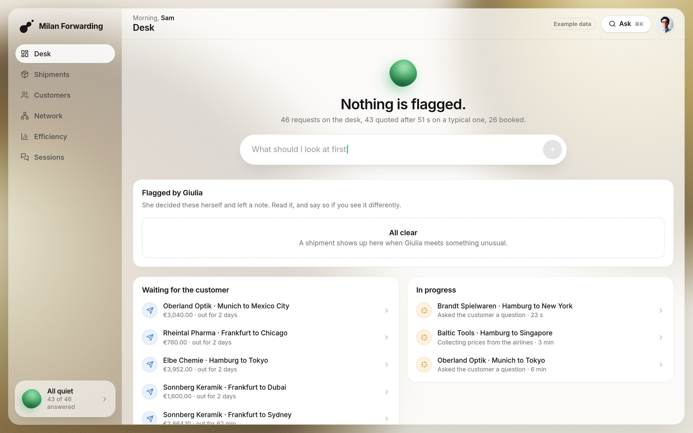
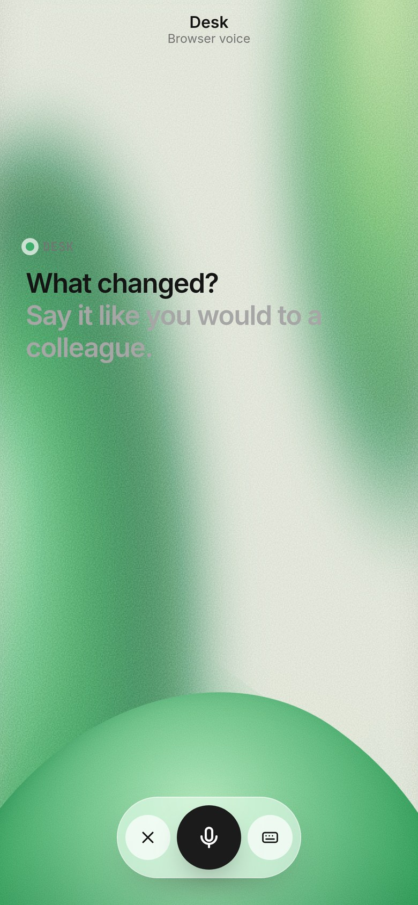
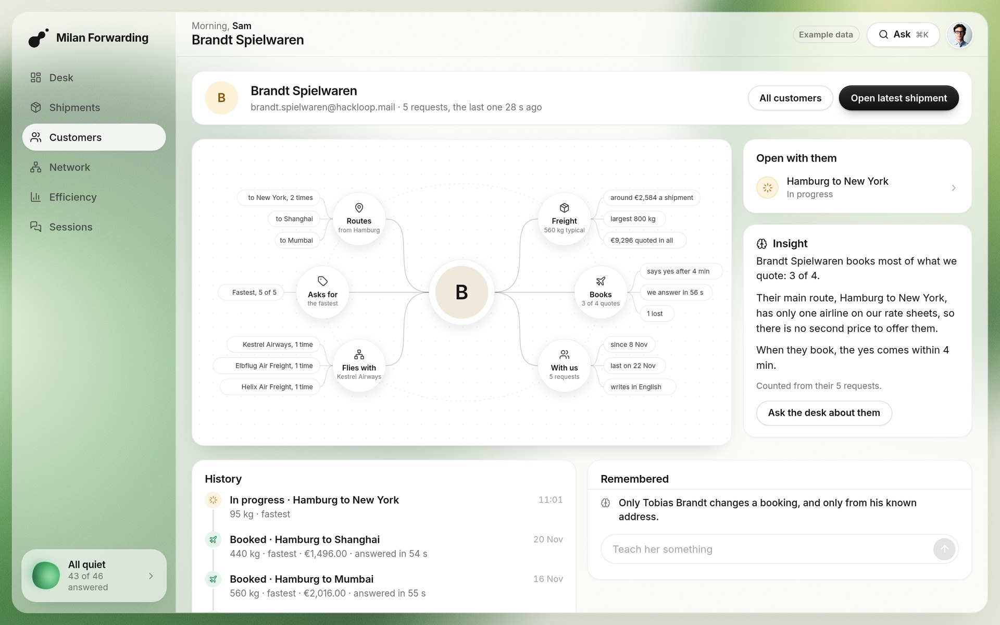

FreightWaves11 June 2015
Forwarders slow to respond to online rate requests
“only 45 percent of forwarders ultimately provided a quote, with the most prompt response taking 30 hours”
Freightos study
Your forwarders sleep. The ships and planes don't.
The question is 5U's own brief title. The close answers it. Spoken: "Who answers your customers' mails at 2 a.m.?"
“only 45 percent of forwarders ultimately provided a quote, with the most prompt response taking 30 hours”
Freightos study
“Our research shows that most companies are not responding nearly fast enough.”
Oldroyd, McElheran, Elkington
“it took, on average, 101 hours to provide a manual spot quote”
Freightos study
Alex Lennane, on the Freightos study
Real headlines, sources in pitch/sources/headlines.md. The HBR study is about web leads in general, so no number from it. Say the Freightos studies are from 2015 and 2017.
The usual answer is more agents. Press space to play, 14 seconds. It ends on one agent, one mail, one answer.
After the swarm: "That's not what you want." Then: "We're START Milan: Sam, Mattia, Jan. Oh, we forgot someone. Giulia." Mattia's line follows.
Commodity: cleaning agent, 11 pieces
Gross weight: 1034 kg
The goods are general cargo, non-dangerous
packing_list_34372.pdfThe attached instruction lists the cleaning agent as UN1760, Class 8 corrosive liquid, although your email describes it as non-dangerous.
Before I can price this, please send the shipper’s declaration for dangerous goods and the safety data sheet.
Thank you, good point. We will send you the dangerous goods documents (shipper's declaration and safety data sheet) shortly.
Giulia decides what to ask. Code guarantees the price.
Real mails from the scored run, Sunday 04:52, word for wordAuer writes "non-dangerous". The attached paper says UN 1760, Class 8, corrosive. Giulia asks for the papers before pricing. 14 seconds after his request, Auer writes "Thank you, good point".
화물은 가구 샘플 12개이며, 총중량은 2028.26 lb, 부피는 113.01 cubic feet입니다.
가장 저렴한 옵션으로, 픽업을 포함한 모든 비용을 합산해 EUR로 견적 부탁드립니다.
-----Original Message----- Sent: 2026-09-20
pls quote air freight ex BRUSSELS AIRPORT to TLV: 19 CTN / 2,796 KGS / 4.9 CBM
In English: 12 furniture samples, Mainz to Riyadh, cheapest option with pickup, total in EUR. Written on top of an old Brussels thread.
가장 저렴한 옵션은 Tamarind Airways로 프랑크푸르트 출발, 리야드까지 3일이며, Mainz에서 공항까지 픽업 트럭이 포함됩니다.
총액: 2432.20 EUR all-in
In English: the cheapest option is Tamarind Airways from Frankfurt, 3 days to Riyadh, the truck from Mainz included. Total 2432.20 EUR all-in.
Lindqvist writes in Korean, in pounds and cubic feet, on top of an old thread about another shipment. Giulia answers in Korean, in euros, with the truck. The customer booked a minute later.
Every quote waits for a person. At 2 a.m. it waits until morning.
No quote waits. You read what Giulia flagged, and step in when you want.
The scored night ran with no human in the loop. That was the organisers' rule. 166 of 187 quotes accepted, 1st of 15 teams.
Your word wins. Tell Giulia once, and Giulia follows it from then on.
The judges work human in the loop. Our position: the person moves from inside every mail to above the desk. Giulia never waits for a person. In an odd case Giulia decides, tells the customer and leaves a note (amber) or a warning (red). If they attack "who is liable": every price, date and recipient is computed or checked by code, the next slide. If they attack "what when Giulia is wrong": red on the Desk, the person takes over that one shipment, and a sentence from a person overrides Giulia from then on.
This is what makes AI first safe, and what is different. Others let the model write the price and put a person behind it as the check. Here the model never does the sums: a calculator in code adds up every offer. The four lines on the right are the product's own always-on rules.
Customers do not fill forms. Giulia reads what they send, in the format they send it.


This is the running product. The numbers on screen are seeded example data, say so.
These eight lines are copied from the product's own setup page. An owner can read exactly what the agent may do.

Built today: notes per customer, shown on the Desk, taught in one sentence. This is the ground the vision slide stands on.
The model decides. Every price, date and recipient is computed or checked by code.
pdf xlsx audioby threaddecides, calls toolsget_offerssend_mailbookcancel_bookingcrmdealmail_carriercarrier_statusnotebrowserno_replyprices, bookingscustomer, carriersSQLitewebphoneRouting is code. One agent session per mail thread. The agent only calls tools, and the engine behind them computes prices in code. The register is the memory and survives a restart.
Vision. Today is built: notes per customer. Next and Then are the plan: Giulia learns step by step from each yes and no and adapts to each customer. Say "we are building this", never "it runs".
Sam Sonntag · Mattia Beltrami · Jan Koeberle
Answers slide 1. The three numbers are from the 5U board at 10:53 on Sunday: refresh them from the final board before the pitch. Everything after this slide is backup for the questions.